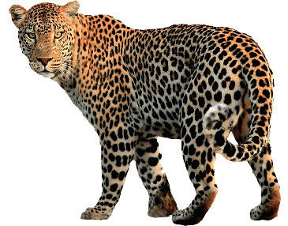
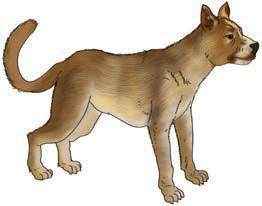
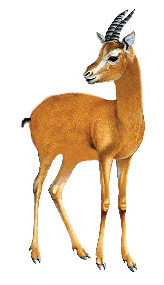
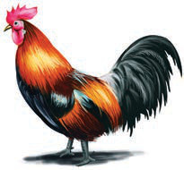
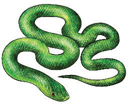
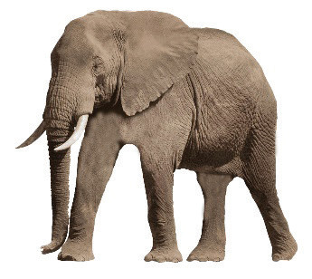

Maswali
1.Taja majina ya wanyama wafugwao wanaopatikana katika picha au maelezo yake.
2.Bainisha wanyama wa porini wanaopatikana katika picha au maelezo yake.
3.Taja wanyama wengine wa porini unaowafahamu.
4.Eleza faida za wanyama wafugwao.